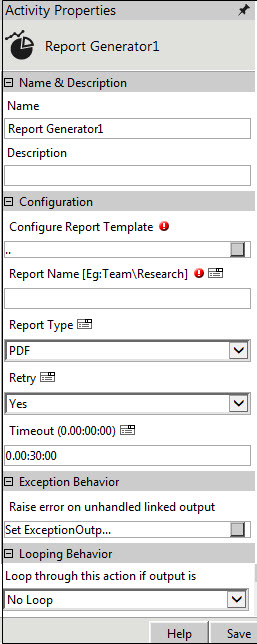

No
Activity Description
You use the Report Generator activity to run a report template and save the report in the Reports list.
Activity Properties

Name & Description
The properties in the Name & Description group have been described below. You can use these properties to specify the name and description for the activity.
Name - This property is to be used to specify a name for the activity.
Property Type: Mandatory (This property must be set.)
Description - This property can be used to specify a brief description to be displayed for the activity.
Property Type: Optional (This property needs to be set only if necessary.)
Configuration
The properties in this group have been described below. You can use these properties to configure the functionality of this activity.
Configure Report Template - This property is to be used to configure the Report Template from the list of available report templates.
Property Type: Mandatory (This property must be set for the configuration.)
Steps to set the Configure Report Template Property
See Configure Report Template for a more detailed understanding of its properties.
Report Name - This property is used to specify a name for the report to be generated.
User can also pass the folder path in this field. For example, Team\Research\GroupPeriodReport. Here the root level folder name is Team under which the Research folder will be the destination for saving the report "GroupPeriodReport". If the given path is not present, then the Report Generator activity will create the required folders.
Property Type: Mandatory (This property must be set for the report to display a name.)
The default name for the selected Report Template is:
[Selected Report Template Name]_#workflow#_#year#_#month#_#day#_#hour#_#minutes#
The default name is a combination of the name of the selected Report Template Name and the place holders. The following table shows the place holders supported for the report name:
Place holders |
Format |
Description |
#day# |
dd |
It will replace with the current day. |
#month# |
MM |
It will replace with the current month. |
#year# |
yyyy |
It will replace with the current year. |
#hour# |
HH |
It will replace with the current hour. |
#minutes# |
mm |
It will replace with the current minutes. |
#seconds# |
ss |
It will replace with the current seconds. |
#application# |
It will replace with the repository name. |
|
#workflow# |
It will replace with the workflow name. |
|
#activity# |
It will replace with the current activity name. |
|
#executionid# |
It will replace with the workflow execution ID. |
|
#executiondetailsid# |
It will replace with the execution details ID. |
Report Type - This property is used to select the type of the report to be exported from the reporting server.
Property Type: Optional
Default type is PDF. Other supported types are MS Excel and Image.
Retry - This property is used to specify if the activity must retry to connect to the reporting service.
Property Type: Optional
Yes: This is the default value. If you select Yes, the activity retries three times to connect to the SQL Server Reporting Service, if the web service does not respond at the first attempt.
No: If you select No, the activity does not retry to connect to the web service.
Timeout - This property is used to specify the web service ( SQL Server Reporting Service) time out. By default, the timeout is 30 minutes. Use this property to modify the timeout.
Property Type: Optional
Exception Behavior
Each activity has the Raise Error on Unhandled Linked Output property on click of which, it shows all the default configured mapped error outputs in red with their check boxes selected.
See Mapped Error Output for more details.
Looping Behavior
The property in the Looping Behavior group has been described below. You can use this property to specify the looping behavior of the activity.
Loop through this action if output is - This property is used to specify the condition for looping the activity by selecting an activity output from the drop-down field.
Property Type: Optional (This property needs to be set only if necessary.)